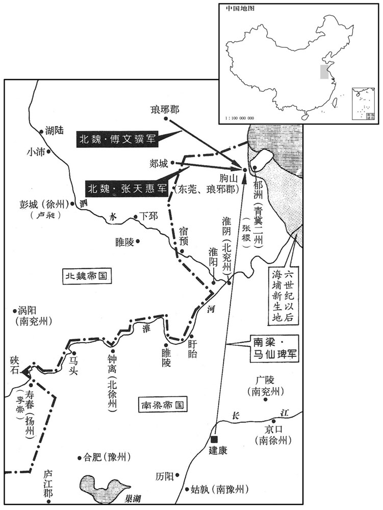
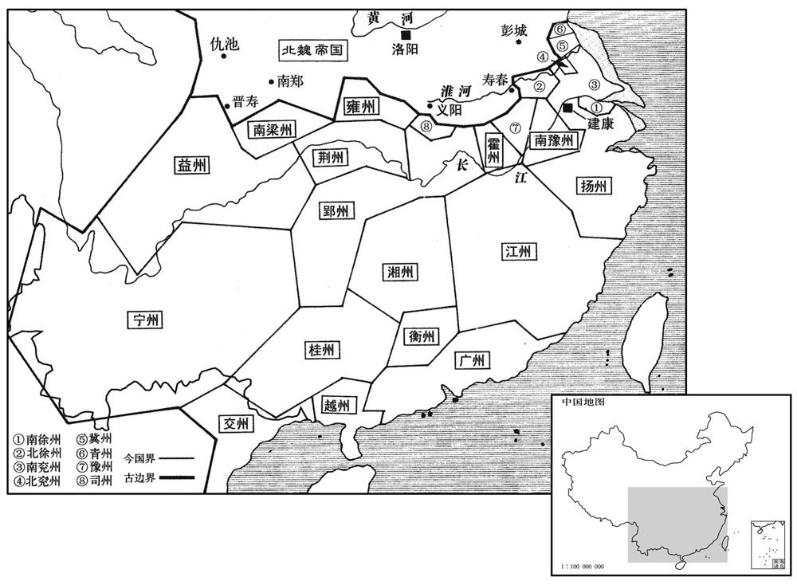

公元511年资治通鉴：本年记事、原文与白话对照
按原书编年位置阅读；追叙和史论不等于本年发生的事件。白话采用所据译本，缺译不以生成译文补齐。
卷147 · 本年记事
公元511年 · 梁高祖武皇帝天监十年
十年〔（辛卯、五一一）〕
本年事件索引（现代整理）

本年形势与背景参考图

本年形势与背景参考图
春，正月，辛丑，上祀南郊，大赦。
春季，正月辛丑（初四），梁武帝在南郊祭天，大赦天下。
尚书左仆射张稷，自谓功大赏薄，〔稷以杀齐东昏侯为功。〕尝侍宴乐寿殿，〔乐，音洛。〕酒酣，怨望形于辞色。上曰：「卿兄杀郡守，〔稷兄緕杀刘遐，事见一百三十四卷宋顺帝升明元年。守，式又翻。〕弟杀其君，有何名称！」稷曰：「臣乃无名称，〔称，尺证翻。〕至于陛下，不得言无勋。东昏暴虐，义师亦来伐之，岂在臣而已！」上捊其须〔捊，卢括翻。须，古须字通。〕曰：「张公可畏人！」稷既惧且恨，乃求出外，癸卯，以稷为青、冀二州刺史。
尚书左仆射张稷，自认为攻劳大，奖赏却少，一次他侍宴于东寿殿，酒酣之际，怨气不满表露于言语表情之中。武帝说：“你的哥哥杀了郡太守，你的弟弟杀了他的君主，你有什么值得夸耀的呢？”张稷回答：“我是没什么值得炫耀的地方，但是为陛下效力以来，不能说没有功劳。东昏侯残暴肆虐，义师也来讨伐他，何况我呢？”武帝捋着他的胡须，说：“张公让人感到害怕呀！”张稷心里既惧害又怨恨，于是请求外放，癸卯（初六），武帝任命他为青、冀二州刺史。
王珍国亦怨望，〔王珍国与稷同杀东昏侯，其怨望之心与稷同。〕罢梁、秦二州刺史还，〔还，从宣翻，又音如字。考异曰：梁书，珍国未尝为梁、秦刺史，今从南史。〕酒后于坐启云：〔坐，徂卧翻。〕「臣近入梁山便哭。」上大惊曰：「卿若哭东昏，则已晚；若哭我，我复未死！」珍国起拜谢，竟不答，坐即散，〔复，扶又翻。坐，徂卧翻。〕因此疏退，久之，除都官尚书。
王珍国也有怨气，他被罢去梁、秦二州刺史还京后，于酒后在座位上启奏武帝说：“我前不久进入梁山便哭了。”武帝听了大吃一惊，说道：“你如果哭东昏侯，则已经晚了；如果哭我，我还没有死！”王珍国站起来拜谢，竟然不回答，酒席当即就散了，王珍国因此被疏远了，很久之后，王珍国被任命为都官尚书。
丁巳，魏汾州山胡刘龙驹聚众反，侵扰夏州，诏谏议大夫薛和发东奏、汾、华、夏四州之众以讨之。〔魏高祖太和十一年，分秦州置华州，治华阴，领华山、登城、白水郡。又置夏州治统万，领化政、阐熙、金明、代名郡。夏，户雅翻。华，户化翻。〕
丁巳（二十日），北魏汾州山胡刘龙驹聚众造反，侵拢夏州，北魏宣武帝诏令谏议大夫薛和征调东秦、汾、华、夏四州的兵力讨伐刘龙驹。
辛酉，上祀明堂。
辛酉（二十四），武帝在明堂祭祀。
三月，琅邪民王万寿杀东莞、琅邪二郡太守刘砜，〔邪，音耶。莞，音管。砜，之舌翻。考异曰：梁帝纪云「三月辛丑」，按长历是月丁酉朔，而卢昶传云「三月二十四夜，万寿等攻掩朐城」。盖辛酉也。今不日以阙疑。又梁马仙琕传及魏帝纪卢昶传皆云「刘砜」，而梁帝纪云「邓砜」，盖字误也。〕据朐山，召魏军。〔朐，音劬。〕
三月，琅邪百姓王万寿杀了东莞、琅邪二郡太守刘晰，占据了朐山，召请北魏军队前来。
壬戌，魏广阳懿烈王嘉卒。
壬戌（二十六日），北魏广阳懿烈王元嘉去世。
魏徐州刺史卢昶遣郯城戍副张天惠、〔秦置郯郡，汉改为东海郡，魏复置郯郡，属东徐州。郯，音谈。〕琅邪戍主傅文骥相继赴朐山，青、冀二州刺史张稷遣兵拒之，不胜。〔梁青、冀二州治郁洲。〕夏，四月，文骥等据朐山，诏振远将军马仙琕击之。〔琕，部田翻。〕魏又遣假安南将军萧宝寅、假平东将军天水赵遐将兵据朐山，受卢昶节度。〔将，即亮翻。〕
北魏徐州刺史卢昶派遣郯城的戍副张天惠、琅邪的戍主傅文骥相继赶赴朐山，梁朝青、冀二州刺史张稷派兵抵挡他们，没有取胜。夏季，四月，傅文骥等人占据了朐山，武帝诏令振远将军马仙去攻打。北魏又派遣代理安南将军萧宝寅、代理平东将军天水人赵遐率兵据守朐山，接受卢昶的指挥调遣。
甲戌，魏薛和破刘龙驹，悉平其党，表置东夏州。〔东夏州领偏城、朔方、定阳、上郡。唐之延州，魏之东夏州也。夏，户雅翻。〕
甲戌（初九），北魏薛和打败了刘龙驹，把他的党羽全部铲平，并上表设置了东夏州。
五月，丙辰，魏禁天文学。
五月丙辰（二十一日），北魏禁止了天文学。
以国子祭酒张充为尚书左仆射。充，绪之子也。〔张绪，岱之兄子，善谈名理。〕
梁朝任命国子祭酒张充为尚书左仆射。张充是张绪的儿子。[11]马仙围朐山，张稷权顿六里以督馈运，上数发兵助之。秋，魏卢昶上表请益兵六千，米十万石，魏主以兵四千给之。冬，十一月，己亥，魏主诏扬州刺史李崇等治兵寿阳，以分朐山之势。卢昶本儒生，不习军旅。朐山城中粮樵俱竭，傅文骥以城降；十二月，庚辰，昶引兵先遁，诸军相继皆溃，会大雪，军士冻死及堕手足者三分之二，仙追击，大破之。二百里间，僵尸相属，魏兵免者什一二，收其粮畜器械，不可胜数。昶单骑而走，弃其节传、仪卫俱尽；至郯城，借赵遐节以为军威。魏主命黄门侍郎甄琛驰锁昶，穷其败状，及赵遐皆免官。唯萧宝寅全军而归。
马仙琕围朐山，张稷权顿六里以督馈运，上数发兵助之。〔数，所角翻。〕秋，魏卢昶上表请益兵六千，米十万石，魏主以兵四千给之。冬，十一月，己亥，魏主诏扬州刺史李崇等治兵寿阳，以分朐山之势。〔治，直之翻。〕卢昶本儒生，不习军旅。朐山城中粮樵俱竭，傅文骥以城降；〔降，户江翻。〕十二月，庚辰，昶引兵先遁，诸军相继皆溃，会大雪，军士冻死及堕手足者三分之二，仙琕追击，大破之。二百里间，僵尸相属，魏兵免者什一二，收其粮畜器械，不可胜数。〔属，之欲翻。胜，音升。考异曰：魏帝纪，卢昶败在十一月。今从梁帝纪。梁纪云「斩馘十余万」，按卢昶表云：「此兵九千，贼众四万，求益兵六千，」魏主以四千给之。安得十余万众！盖梁史为夸大耳。〕昶单骑而走，弃其节传、仪卫俱尽；〔传，张恋翻。〕至郯城，借赵遐节以为军威。魏主命黄门侍郎甄琛驰驲锁昶，穷其败状，〔甄，之人翻。琛，丑林翻。驲，人质翻，驿传也。〕及赵遐皆免官。唯萧宝寅全军而归。
本段缺少可靠对应白话，原文完整保留；未使用生成译文。
卢昶之在朐山也，御史中尉游肇言于魏主曰：「朐山蕞尔，僻在海滨，卑湿难居，〔蕞，祖外翻。〕于我非急，于贼为利。为利，故必致死以争之；非急，故不得已而战；以不得已之众击必死之师，恐稽延岁月，所费甚大。假令得朐山，徒致交争，终难全守，所谓无用之田也。〔左传吴将伐齐，子胥谏曰：「得志于齐，犹获石田也，无所用之。」〕闻贼屡以宿豫求易朐山，若必如此，持此无用之地，复彼旧有之疆，兵役时解，其地为大。」魏主将从之，会昶败，迁肇侍中。肇，明根之子也。〔游明根事魏太武及孝文，以耆宿见重。〕
卢昶在朐山之时，御史中尉游肇对北魏宣武帝说：“朐山弹丸之地，偏处海滨，地势低下，异常潮湿，难以居住，对于我们不是急用之处，而对于贼敌则是非常有用的。正因为对他们有用处，所以必定要拼死相争；对我们用处不大，所以不得已而交战。以不得已之众抵抗拼命的军队，恐怕拖延时日，耗费甚大。假使能得到朐山，徒然地导致双方互相争夺，终将难以保全，正所谓无用之地。听说贼敌屡次提出要以宿豫交换朐山，如果真是这样的话，用这块无用之地，换回来那块过去就属我们所有的疆域，兵戈之争顿时化解，其益处是非常大的。”宣武帝准备要照此行事，恰恰卢昶战败，就提升游肇为侍中。游肇是游明根的儿子。
马仙琕为将，能与士卒同劳逸，所衣不过布帛，所居无帏幕衾屏，饮食与厮养最下者同。〔将，即亮翻。衣，于既翻。厮，息移翻。养，养马者，音余亮翻。韦昭曰：析薪为厮，炊烹为养。〕其在边境，常单身潜入敌境，伺知壁壨村落险要处，〔伺，相吏翻。〕所攻战多捷，士卒亦乐为之用。〔乐，音洛。为，于伪翻。〕
马仙作为将帅，能同士卒们同甘共苦，穿的衣服都是布帛制成，住的地方没有帏幕衾屏，饮食与仆人、马等最低下者同样。他镇守边境，常常只身潜入敌境，偷偷察看壁垒村落险要之处，打仗大多能获胜，士卒们也乐于为他卖力。
魏以甄琛为河南尹，琛表曰：「国家居代，患多盗窃，世祖发愤广置主司里宰，皆以下代令长及五等散男有经略者乃得为之。〔长，知两翻。五等散男，谓爵为五等男而居散官者。魏书曰：魏公、侯、伯、子、男，有开国，有散，凡散各降开国一品。非以其居散官而谓之散男也。散，悉亶翻。〕又多置吏士为其羽翼，崇而重之，始得禁止。今迁都已来，天下转广，四远赴会，事过代都，五方杂沓，寇盗公行，里正职轻任碎，多是下材，人怀苟且，不能督察。请取武官八品将军已下干用贞济者，〔贞济，谓坚贞而济事也。〕以本官俸恤领里尉之任，高者领六部尉，中者领经途尉，下者领里正。〔魏官既给俸，又给恤亲之禄，故谓之俸恤。魏分洛阳城中为六部，置六部尉。因张平子东京赋「经途九轨」，置经途尉。经途，城中之大途也。其余处各置里正。〕不尔，请少高里尉之品，〔少，诗沼翻。〕选下品中应迁者进而为之，督责有所，辇毂可清。」〔自汉以来，京师谓之辇毂下。〕诏曰：「里正可进至勋品，〔勋品，勋官初品也。〕经途从九品，六部尉正九品，〔洛阳六部尉并置于东汉之时，曹操为洛阳北部尉，此其证也。从，才用翻。〕诸职中简取，不必武人。」琛又奏以羽林为游军，于诸坊巷司察盗贼，于是洛城清静，后常踵焉。
北魏任命甄琛为河南尹，甄琛上表说：“国家在代京建都之时，盗窃成患，世祖皇帝为此而发愤，广置主司、里宰，全都让代京令长以下及五等散男中有谋略者来担任。又多置吏士做他们的羽翼，非常重视他们，盗贼方才得到禁止。自从迁都以来，交往扩大，四方来会，已经远远超过了代都，而五方崐杂沓，寇盗公然行事，里正职位轻，事务琐碎，担任其职的大多是才能低下者，人人抱着苟且之心，不能起到督察的作用。请求挑选武官中八品将军以下而又有才干且品行端正热心办事的人，让他们享受原来官职的俸禄和恤亲之禄而担任里尉的职务，高者领六部尉，中者领经途尉，下者领里正。不然的话，也可以稍微提高里尉的品级，选下品中应该提拔者晋升担任，只要有人专门负责督管，京城的治安即可好转。”宣武皇帝诏令：“里正的品级可以升到勋官初品，经途尉为从九品，六部尉为正九品，从诸职中选拔，不必由军人来担任。”甄深又上奏请把禁卫军作为游军，让他们在各坊巷中巡逻检查盗贼，于是洛阳城马上变得清静了，这种办法在后代也得到因袭。
是岁，梁之境内有州二十三，〔此据五代史志。按萧子显齐志，齐有扬、南徐、豫、兖、南兖、北徐、青、冀、江、广、交、越、荆、巴、郢、司、雍、梁、秦、益、宁、湘、南豫二十三州。时已废巴州，当以王茂所立宛州足之。〕郡三百五十，县千二十二。是后州名浸多，废置离合，不可胜记。〔胜，音升。〕魏朝亦然。〔朝，直遥翻；下同。〕
这一年，梁朝境内有二十三个州，三百五十个郡，一千零二十二个县。这以后州名越来越多，废置离合，不可胜记。北魏也同样如此。
上敦睦九族，优借朝士，有犯罪者，皆屈法申之。百姓有罪，则案之如法，其缘坐则老幼不免，一人逃亡，举家质作，〔质，音致，又如字。质作，质其家属而罚作之。〕民既穷窘，奸宄益深。尝因郊祀，有秣陵老人〔江南以建康、秣陵为赤县；隋废秣陵、建康并为江宁县。窘，渠陨翻。宄，音轨。〕遮车驾言曰：「陛下为法，急于庶民，缓于权贵，非长久之道。诚能反是，天下幸甚。」上于是思有以宽之。
梁武帝对同姓的亲族非常亲近宽厚，对朝廷官员也非常优待爱护，其中有犯法的，他都超越法律而替他们开脱。而老百姓有罪，则一律按照法律处置，并且株连犯罪，不管老幼一概不免，一人逃亡，全家以身抵押服劳役，百姓既然被逼迫的走投无路，各种作奸犯科的窃盗反乱案件就更严重了。有一次，梁武帝去郊祀，有一个秣陵老头借此机会拦住御驾讲道：“陛下执法，对庶民太严酷，对权贵则太宽松，这不是长久之道。如果能打一个颠倒，则天下大幸呀。”武帝于是考虑对百姓执法加以放宽。
译本中未与胡注本可靠对应的内容
以下另列供核对版本差异，不并入胡注本正文。
译本所附古文
[11]马仙围住了朐山，张稷临时驻扎六里以便监督粮运，梁武帝几次发兵协助他们。秋季，北魏卢昶上表朝廷请求增兵六千，米十万石，宣武帝给他增派了四千兵力。十一月己亥（初七），宣武帝诏令扬州刺史李崇等人在寿阳操练军队，以便分散梁朝在朐山的兵势。卢昶本是一个儒生，不熟悉军旅事务。朐山城中的粮食和柴火全都用尽了，傅文骥献城投降；十二月庚辰（十九日），卢昶带兵先逃跑了，其他各路军马都相继溃散，正好天下大雪，兵士冻死以及冻掉手脚的有三分之二，马仙追击，大获全胜。二百里之间，僵尸遍地，北魏兵卒幸免于难者仅占十分之一二，梁朝军队收缴到的粮食、牲口以及各种器械，不可胜数。卢昶单人匹马逃跑，丢弃了节传、仪卫之具。到了郯城，他借用了赵遐的节传显自己的军威，以掩饰自己的失败。宣武帝命令黄门侍郎甄琛骑驿马去把卢昶锁拿到洛阳，仔细查问他惨败的状况，最后卢昶和赵遐全被免官。只有萧宝寅把军队完整地带回。 卢昶之在朐山也，御史中尉游肇言于魏主曰：“朐山蕞尔，僻在海滨，卑湿难居，于我非急，于贼为利。为利，故必致死以争之；非急，故不得已而战；以不得已之众击必死之师，恐稽延岁月，所费甚大。假令得朐山，徒致交争，终难全守，所谓无用之田也。闻贼屡以宿豫求易朐山，若必如此，持此无用之地，复彼旧有之疆，兵役时解，其利为大。”魏主将从之，会昶败，迁肇侍中。肇，明根之子也。
译本白话
卢昶在朐山之时，御史中尉游肇对北魏宣武帝说：“朐山弹丸之地，偏处海滨，地势低下，异常潮湿，难以居住，对于我们不是急用之处，而对于贼敌则是非常有用的。正因为对他们有用处，所以必定要拼死相争；对我们用处不大，所以不得已而交战。以不得已之众抵抗拼命的军队，恐怕拖延时日，耗费甚大。假使能得到朐山，徒然地导致双方互相争夺，终将难以保全，正所谓无用之地。听说贼敌屡次提出要以宿豫交换朐山，如果真是这样的话，用这块无用之地，换回来那块过去就属我们所有的疆域，兵戈之争顿时化解，其益处是非常大的。”宣武帝准备要照此行事，恰恰卢昶战败，就提升游肇为侍中。游肇是游明根的儿子。